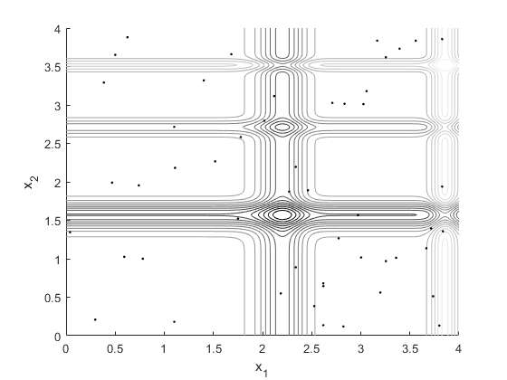

clear all
x = [0:0.01:4];
y = [0:0.01:4];
for i=1:length(x)
for j=1:length(y)
f(i,j) = -sin(y(j))*sin(y(j)^2/pi)^20-sin(x(i))*sin(2*x(i)^2/pi)^20;
end
end
figure(1);clf;hold on
contour(x,y,f,20)
xlabel('x_1')
ylabel('x_2')
axis([0 4 0 4])
colormap(gray)
figure(3);clf;hold on
contour(x,y,f,20)
xlabel('x_1')
ylabel('x_2')
axis([0 4 0 4])
colormap(gray)
n = 2;
N = 50;
p = 1000;
rho = .5;
zeta = 20;
X1 = linspace(0,4,p);
X2 = linspace(0,4,p);
tau = ones(2,length(X1));
all_iter_best_f(1) = 1000;
for k=1:100
P = [tau(1,1:end)/sum(tau(1,1:end));tau(2,1:end)/sum(tau(2,1:end))];
cum_prob = [cumsum(P(1,1:end));cumsum(P(2,1:end))];
cum_prob(:,1) = [0;0];
for j=1:N
index = find(cum_prob(1,1:end)<=rand,1,'last');
x1(1,j) = X1(index);
index = find(cum_prob(2,1:end)<=rand,1,'last');
x2(1,j) = X2(index);
end
if k==1
px = x1; py=x2;
end
f = -sin(x1).*sin(x1.^2/pi).^20-sin(x2).*sin(2*x2.^2/pi).^20;
fbest = min(f);
fworst = max(f);
tau_old = (1-rho)*tau;
delta_tau = abs(zeta*fbest/(fworst));
if fbest<min(all_iter_best_f)
all_iter_best_f(k) = fbest;
else
all_iter_best_f(k) = min(all_iter_best_f);
end
index = find(f==fbest);
for j=1:length(index)
ii = find(X1==x1(index(j)));
jj = find(X2==x2(index(j)));
tau(1,ii) = tau_old(1,ii)+delta_tau;
tau(2,jj) = tau_old(2,jj)+delta_tau;
end
end
x1_best = X1(ii)
x2_best = X2(jj)
figure(1)
plot(x1,x2,'k.')
figure(2)
plot(all_iter_best_f,'k.')
xlabel('iteration number')
ylabel('min f(x_1,x_2)')
figure(3)
plot(px,py,'k.')
x1_best =
2.1181
x2_best =
1.5536
